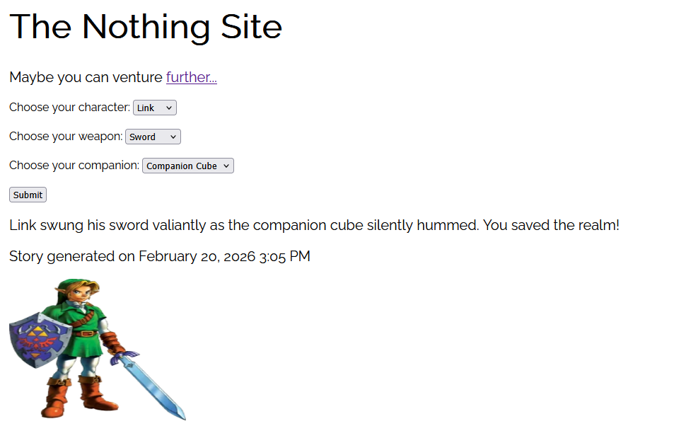
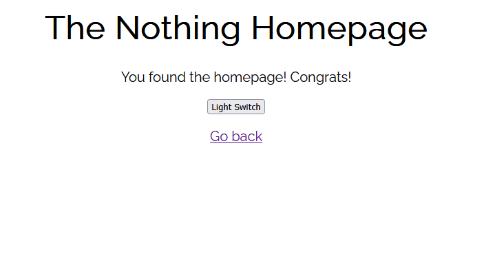

Code Explanation
Introduction
I made a website about nothing using Node and a http server. My first script creates the server but my second script adds some interactivity by allowing user input and displaying a short story based off their choices. Here are screenshots of each page.
 Index.js Explanation
const http = require('http');
const {readFileSync} = require('fs');
const {generate} = require('./story');
These all are imports. I imported the http module, file system module, and the generate function from the 'story.js' file.
const server = http.createServer((req, res) => {
const url = req.url;
});
server.listen(8080);
console.log('Server reached at http://localhost:8080/');So here I made a function that creates the web server. The (req, res) are the two arguments that get passed every time someone visits the site. Then, I pulled the url path and stored it in a variable. Finally, I made the server listen on port 8080, then printed a console.log so I know everything is working correctly. Important note: All the code left for index.js is INSIDE the server function so that the code is always running.
if (url === '/') {
res.writeHead(200, {'content-type': 'text/html'});
res.end(readFileSync('./index/index.html'));
} else if (url === '/home') {
res.writeHead(200, {'content-type': 'text/html'});
res.end(readFileSync('./index/home.html'));
} else if (url === '/style.css') {
res.writeHead(200, {'content-type': 'text/css'});
res.end(readFileSync('./index/style.css'));
} else {
res.writeHead(404, {'content-type': 'text/html'});
res.end(readFileSync('./index/404.html'));
}
This is the actual server logic. If the url ends in '/', which means theres no directory, the server will display the landing page.
res.writeHead(200, {'content-type': 'text/html'}) means the server tells the browser there's a 200 code (which means OK) before telling the browser to expect an HTML file.
res.end(readFileSync('./index/index.html')) means the server reads the HTML file and sends it to the browser before closing the response. It is important to always close the response.
else if (url === '/style.css') serves the stylesheet which the HTML files need. The content type is different so the browser knows it's a CSS file.
Finally, if the URL doesn't match any of the above, then serve a 404 error code and display the 404 HTML page.
else if (url === '/story' && req.method === 'POST') {
let body = '';
req.on('data', chunk => {body+=chunk;});
req.on('end', () => {
const choices = JSON.parse(body);
const result = generate(choices);
res.writeHead(200, {'content-type': 'application/json'});
res.end(JSON.stringify(result));
});
}
This is the final else if and this one is a bit more tricky. In short, the conditional is checks if the URL is /story and the request must be a POST method.
The let body statement just creates an empty string to be filled with incoming data.
The next line listens for incoming data. The data arrives in chunks from the browser, then each chunk gets stored inside the body variable I made above.
Now, I made a function that fires off when all the chunks have arrived. The next line converts the string into an array. The next line
passes the choices array I just made into the generate function I made in my story.js file. We will get to that later.
Finally, the next line sends back a 200 success status and tells the browser to start expecting some JSON data back.
The final line converts the result from story.js into a JSON string and sends it back to the browser where the HTML displays it.
Now let's get into the story.js file.
Story.js Explanation
const _ = require('lodash');
const dayjs = require('dayjs');Here are the first lines of code. These are just assigning my dependencies so I can call them easily.
const generate = (choices) => {
const [char, wep, comp] = choices;
const timestamp = dayjs().format('MMMM D, YYYY h:mm A');
Here's the generate function! The bulk of the code is nested here. It's passing the choices received from the server and formatting them into an array. I also made a timestamp variable using a method from the dayjs dependency.
let story = '';
let image = '';
if (char === 'Link' && wep === 'Sword' && comp === 'Companion Cube') {
story = 'Link swung his sword valiantly as the companion cube silently hummed. You saved the realm!';
image = 'https://static.wikia.nocookie.net/characterprofile/images/a/a1/LinkZelda.png';
}
Then, I had to create variables holding empty strings so I can fill them depending on where the choices fall in the
else if chain. The next line is the first if statement checking if those choices are fulfilled, if they are then they replace
the empty strings I created above. I'm not going to explain the rest of the else if chain since it's pretty similar to this.
else {
const fallbacks = [
`${char} wielded their ${wep} against the horde. But... it wasn't enough. ${comp} was the first to go. The realm is lost.`,
`${char} tried their best with a ${wep} but ${comp} abandoned them in the heat of battle. Tragic.`,
`${comp} betrayed ${char} at the worst possible moment. The ${wep} was no match alone. The realm is lost.`,
];
story = _.sample(fallbacks)
image = 'https://media.tenor.com/HgfzKvP9OeAAAAAM/loser-you-lose.gif';
}
Here's the last part of the else if chain. This is the fallback incase any of the if statements above are not fulfilled.
I used lodash's .sample method to randomly choose an outcome from the fallbacks array.
return {
story,
image,
timestamp: `Story generated on ${timestamp}`
};
};
module.exports = {generate};
Return sends the specified pieces of data back to whoever called generate(), which in this case the index.js server.
module.exports = {generate} makes the generate() function available to other files so they can call it.